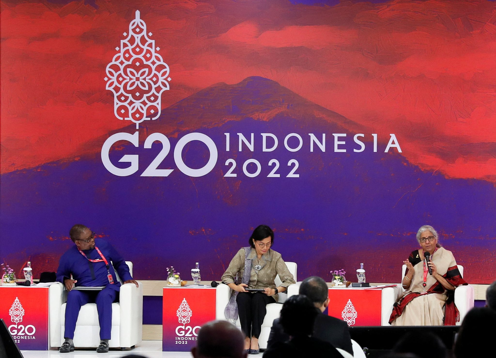
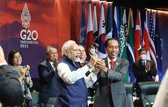
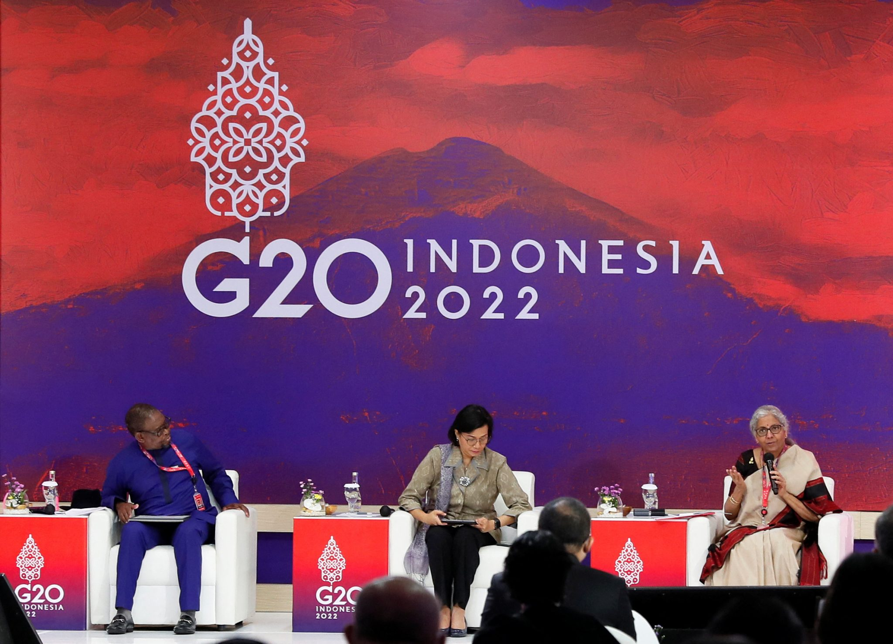
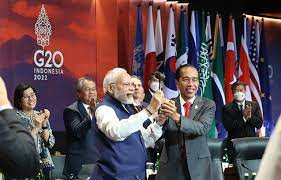

.png)
Kerja sama multilateral melibatkan lebih dari dua negara, sering kali melalui organisasi internasional atau inisiatif global, untuk mengatasi tantangan energi yang bersifat lintas batas, seperti perubahan iklim dan ketimpangan akses energi.
Kerja Sama Multilateral adalah kerja sama yang diselenggarakan oleh bangsa-bangsa di dunia tanpa memandang wilayah untuk kepentingan tertentu. Kerja sama multilateral adalah bentuk kolaborasi yang melibatkan lebih dari dua pihak, baik itu negara, organisasi internasional, atau lembaga lainnya, untuk mencapai tujuan bersama. Dalam konteks ini, negara-negara yang terlibat bekerja sama berdasarkan prinsip kesetaraan, dialog, dan saling menguntungkan. Kerja sama multilateral sering digunakan untuk menangani isu-isu yang bersifat global atau regional, seperti perdagangan, keamanan, perubahan iklim, dan energi, yang memerlukan pendekatan kolektif karena dampaknya meluas melintasi batas negara.
International Solar Alliance (ISA) adalah sebuah inisiatif global yang didirikan untuk mendorong penggunaan energi surya, terutama di negara-negara berkembang. Indonesia, sebagai salah satu anggota ISA, berperan aktif dalam kerjasama internasional ini untuk mempercepat transisi energi bersih di kawasan Asia dan negara-negara tropis lainnya. ISA memberikan dukungan berupa pendanaan, transfer teknologi, dan pelatihan untuk membantu negara-negara berkembang dalam merencanakan dan melaksanakan proyek-proyek energi surya yang berkelanjutan. Tujuan utamanya adalah meningkatkan akses terhadap energi terbarukan, mengurangi ketergantungan pada sumber energi fosil, dan mempercepat pencapaian target perubahan iklim global.
Melalui ISA, Indonesia tidak hanya memperkuat komitmennya dalam upaya global untuk mengurangi emisi karbon, tetapi juga berkontribusi pada peningkatan kapasitas energi terbarukan di negara-negara anggota lainnya. Inisiatif ini berfokus pada penyediaan teknologi yang tepat dan terjangkau untuk mengatasi tantangan energi, seperti distribusi energi yang tidak merata dan kurangnya infrastruktur di wilayah pedesaan. Dengan lebih dari 120 negara terlibat, ISA memfasilitasi kolaborasi antara pemerintah, sektor swasta, dan lembaga internasional untuk mengembangkan proyek-proyek yang memanfaatkan energi surya, yang dapat meningkatkan ketahanan energi dan mempercepat pembangunan berkelanjutan.
 


